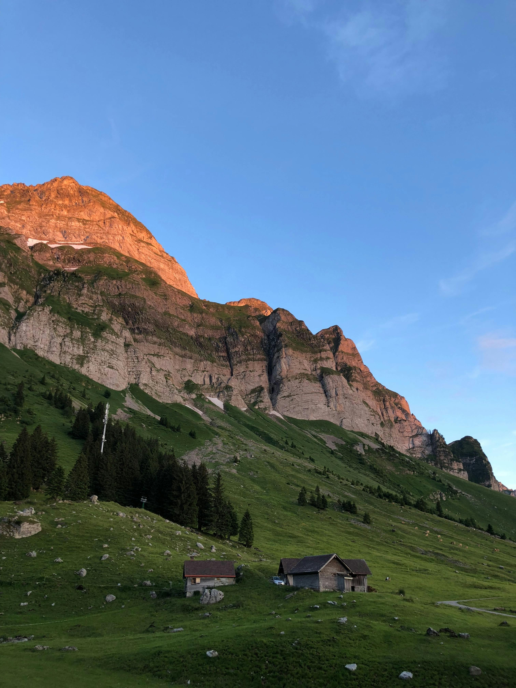
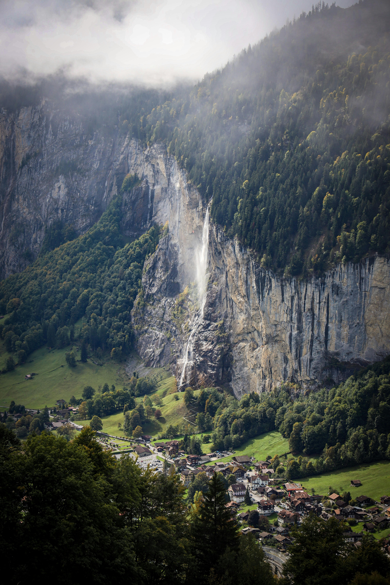

How I imagine it:

Where the morning light touches the leaves, I feel my soul breathing again quiet and alive.

Sometimes I imagine walking here, barefoot and free, as if time itself forgot to move.

In the soft whisper of the wind, I hear the echo of my oldest dream to belong to the wild.

When the sun fades, I imagine staying letting the night sky teach me how to dream again.